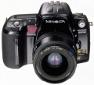

器材库 > 胶片单反相机 > Dynax 800si/α807si/Maxxum 800si

规格总览
产品类型
自动对焦胶片单反相机
发布日期
1997-05
镜头卡口
Minolta/Konica-Minolta/Sony AF
停产
是
取景规格
取景器
眼平五棱取景器, 固定
取景范围
92% × 94%
取景放大倍率
0.75倍
取景视点
22.9mm
屈光度调节范围
-2.5 ~ +0.5
反光镜
快速瞬回半透明
景深预视
有
对焦系统
自动对焦系统类型
TTL-CCD
对焦点
4点
AF检测范围
-1EV～19EV
对焦模式
单次AF, 连续AF, 人工智能伺服AF
焦点预测
有
AF辅助灯
有
曝光控制
测光模式
多分区评价测光, 点测光
测光范围
评价测光：0-20EV~点测光：3-20EV
曝光模式
P（程序自动曝光）, A（光圈优先自动曝光）, S（快门速度优先自动曝光）, M（手动测光曝光）
ISO感光度
DX：ISO 25-5000-M：ISO 6-6400
自动包围曝光
3档，以12、13或1EV为增量
多重曝光
有
自动曝光锁
有
快门
快门类型
电子控制，纵走式，焦平面快门
快门速度
30 - 1/8000秒，B门
闪光同步速度
1/200秒
B门
有
自拍
10秒
快门线插孔
有
内置闪光灯
闪光模式
自动, TTL, 无线遥控
闪光指数
GN 20
后帘同步
有
外接闪光灯
PC插孔
有
过片系统
最高连续过片速度
3fps
电源
电池
1枚6V （2CR5）
外观
尺寸
153.5 ×107 ×71.5mm
重量
640g
cityanimal2009-08-11 15:394.83 分
操作性 5.00功能性 5.00美观性 5.00趣味性 5.00耐用性 4.00性价比 5.00
DYNAX2008-05-04 22:534.42 分
操作性 4.50功能性 4.50美观性 4.00趣味性 4.50耐用性 4.00性价比 5.00
siva2006-09-24 23:084.5 分
操作性 4.50功能性 4.00美观性 4.50趣味性 4.50耐用性 4.50性价比 5.00
wt99332006-08-18 09:25
wt99332006-08-15 21:074 分
操作性 4.00功能性 4.00美观性 4.00趣味性 3.50耐用性 4.00性价比 4.50
art7772006-06-07 14:434.75 分
操作性 4.50功能性 4.50美观性 4.50趣味性 5.00耐用性 5.00性价比 5.00
zhangzhihui682006-04-23 21:184.92 分
操作性 4.50功能性 5.00美观性 5.00趣味性 5.00耐用性 5.00性价比 5.00
zlj2006-04-07 21:354.83 分
操作性 5.00功能性 5.00美观性 5.00趣味性 5.00耐用性 4.50性价比 4.50
neosun2006-02-03 13:335 分
操作性 5.00功能性 5.00美观性 5.00趣味性 5.00耐用性 5.00性价比 5.00
主要用美能达2005-10-20 23:464.67 分
操作性 5.00功能性 5.00美观性 4.50趣味性 4.50耐用性 4.00性价比 5.00
子非鱼2005-10-20 00:544.75 分
操作性 4.50功能性 5.00美观性 4.50趣味性 4.50耐用性 5.00性价比 5.00
music842005-10-19 21:244.5 分
操作性 4.00功能性 4.50美观性 4.50趣味性 4.50耐用性 4.50性价比 5.00
yishiwucheng2005-10-04 20:314.67 分
操作性 4.50功能性 5.00美观性 5.00趣味性 5.00耐用性 4.50性价比 4.00
北方郎2005-08-20 13:444.67 分
操作性 4.50功能性 4.50美观性 4.00趣味性 5.00耐用性 5.00性价比 5.00
6z2004-12-03 18:315 分
操作性 5.00功能性 5.00美观性 5.00趣味性 5.00耐用性 5.00性价比 5.00
戏天使2004-11-27 12:045 分
操作性 5.00功能性 5.00美观性 5.00趣味性 5.00耐用性 5.00性价比 5.00
导弹旅长2004-11-26 11:394.58 分
操作性 4.00功能性 4.50美观性 5.00趣味性 4.50耐用性 4.50性价比 5.00
sanzhu2004-11-16 14:555 分
操作性 5.00功能性 5.00美观性 5.00趣味性 5.00耐用性 5.00性价比 5.00
sanzhu2004-11-07 16:14
sanzhu2004-11-07 11:58
产品图 / 样片
美能达 Dynax 800si
评测 / 相关文章
该产品暂无存档的评测文章